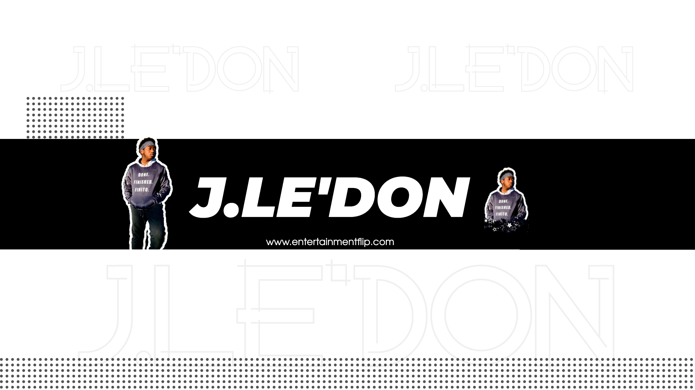

J.le'Don: The Rising Star Bringing Dreams to Life

In the ever-evolving world of entertainment, there's a new sensation on the horizon, and his name is J.le'Don. With a unique blend of charisma, talent, and a determination to bring the superstar back to America, he's a force to be reckoned with. In a recent interview, J.le'Don opened up about his journey into the world of entertainment and the defining moments that have shaped his career.
Growing up in a musical family, J.le'Don's passion for music was almost predestined. For him, music was more than a pastime; it was a second language. He recalls watching award shows, concerts, and music TV programs with his siblings and cousins. The thrill of seeing artists light up the stage and spread joy to the world ignited a spark within him. Additionally, his father's forays into the recording studio added fuel to his artistic fire. J.le'Don knew that music was his true calling. J.le'Don has achieved remarkable success as an independent artist. Hosting his own shows, releasing his music, and winning the prestigious Make Your Mark Elite Artist award are just a few of his notable accomplishments. These milestones highlight his dedication and tenacity in an industry where breaking through can be a formidable challenge.
For J.le'Don, one of the most profound moments in his career was experiencing the audience singing his songs back to him during a live performance. The feeling of connecting with people through his music and realizing that his songs resonated with them left an indelible mark. It was a testament to the power of music to transcend boundaries and touch people's hearts. What sets J.le'Don apart from others in the industry is his unwavering belief in reawakening the inner dreamer in all of us. In a time when hope may seem scarce, he's on a mission to bring back the superstar, reminding us that dreams can still become reality. In his words, "Today, there are a lot of stars, but not enough megastars." He aims to inspire others to chase their dreams relentlessly.
J.le'Don is currently hard at work on his upcoming album. He's been meticulously crafting the album for over a year, ensuring that every detail is perfect. With themes of positivity, freedom, inspiration, and relatability, this album promises to be a journey worth embarking on. J.le'Don draws inspiration from legends like Michael Jackson, Janet Jackson, Whitney Houston, Beyoncé, Prince, Brandy, and Jazmine Sullivan. Their influence is evident in his dedication and artistry. A typical day in J.le'Don's life includes moments of introspection, watching performances of his favorite artists, tending to his garden, and immersing himself in music. Despite the highs and lows of his career, he continues to push forward.
Like many artists, J.le'Don has faced moments of depression triggered by the rollercoaster of highs and lows in his career. However, he remains resilient and committed to his craft. Surprisingly, J.le'Don is known for his unexpected humor. While his fans may find him hilarious, he insists he's not trying to be funny all the time. Nevertheless, his natural charm and humor shine through. To aspiring artists, J.le'Don offers valuable advice: "Things are going to move slow in the beginning, but believe me, you’re gonna be very grateful for it. This is your moment to really focus on your craft. Do as much songwriting as you can now because when things start going, you’re going to want to have a catalog."
J.le'Don's mantra for success is simple yet powerful: "When people tell you that you can't, make it your mission to show them you can." What keeps J.le'Don creatively inspired and motivated is his desire to provide for his family and make his hometown even greater.
In closing, J.le'Don has a powerful message for his fans and the world: "Without the Don, you would have no tomorrow. Like the sun that rises in the morning and a phoenix that rises from the ashes, I’m coming; get ready."
With an unwavering commitment to his craft and a mission to inspire dreamers, J.le'Don is undoubtedly a rising star to watch in the world of entertainment. Keep an eye out for his upcoming album, as he continues to leave his mark on the music industry.